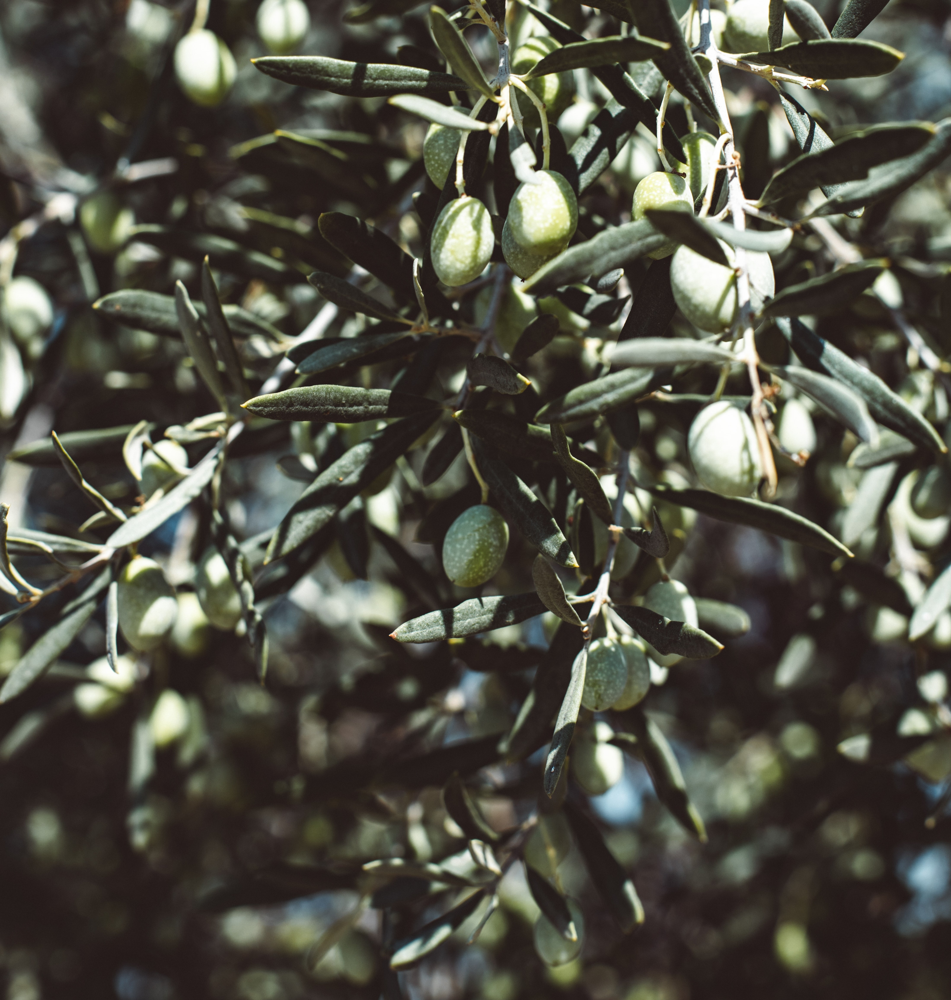
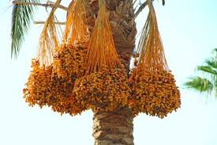
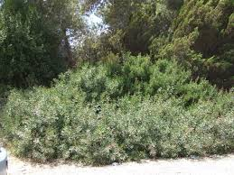
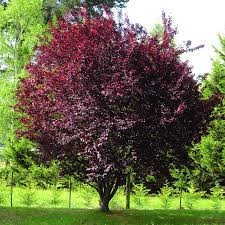
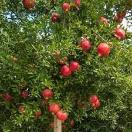

| Olive |
In my opinion Olive branches are the best weaving materials in israel, they stay flexible for up to a whole month
from the time you pick them, they are very flexible, they are very strong, they are very easy to come by and
you can pick the branches growing from the bottom of the trunk which are the straightest and longest and by that you are actually helping
the tree grow better so working with olives is a win win situation |
olive basically has no cons as far as i can see |
 |
| Date Palm Branches |
The date branches are actually the byproduct of growing dates and as such are very abundant in the autumn in israel when date picking ocurrs.
Date branches are easy to work with, are quite flexible after soaking in water for 24 hours and have a beautiful white yellowish color |
Are not easy to find out of season if you have'nt collected them on time, Require a 24 hour soak before work and in late years growers in
israel have found that growing the Emery dates which has the best branches for weaving is not profitable and are stopping to grow them |
 |
| Pistacia Lenticus (Elat Hamastic) |
Has an amazing glossy red color, very common in municipal gardening in the south of israel and grows abundantly in the wild in the north of israel,
very flexible |
Does'nt stay flexible for longer than a week, has a very strong odor which some people love but others can not stand |
 |
| Pissardi Plum |
Has an out of this world stunning almost-black dark-purple color, Quite popular in municipal gardening |
Is not very flexible, Does not maintain flexibility for longer than 48 hours |
 |
| Pomegranate |
Very flexible, has an interesting yellow color, has a texture that helps the branches remain where you tuck them, abundant both in gardens
and in the wild |
A favourite food for some bugs, i personally have had to get rid of some baskets after they became bug infested |
 |